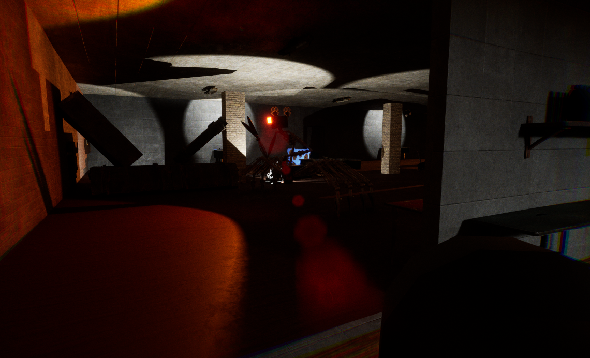
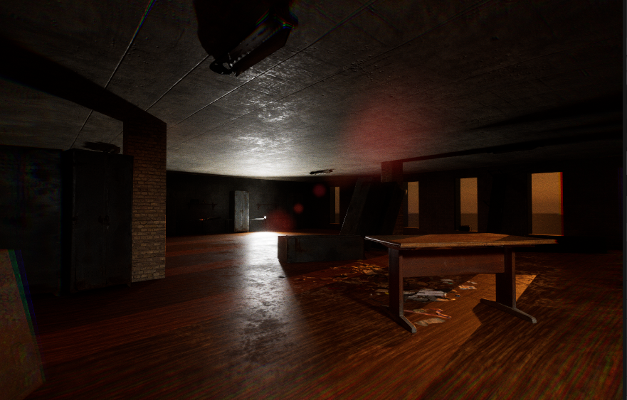

The Game centers around the player platforming across a cityscape using the ability to close the left or right eye in order to create platforms or reveal hidden obstacles.
This game was produced by just me as a solo project, using audio and music obtained with the appropriate licensing and crediting.

The game consists of 5 levels in a low-poly city where you use the left and right mouse buttons to create platforms and reveal hazards respectively.
I was inspired by games such as mirrors edge but knew i had limited skills at this point, being one of my first game projects.

For me a lot of this game was about producing something with a determined start and end, and learning how to import assets into unity to make a full game.
A lot of the base of this game was from tutorials, however the mechanics i worked on such as the platform creation and hazard revealing i felt were a good start into gameplay programming.

For being one of my first fully finished projects, i was quite pleased with how it looked and played,
although it isnt up to my current 2024 standards, i enjoyed the development process against my deadlines.